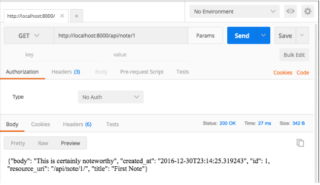
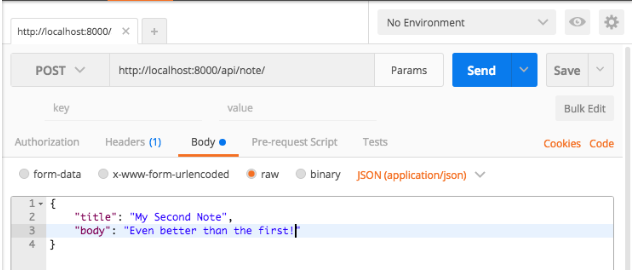

Creating a Django API in 10 Minutes
Django is by far the most popular Python framework, designed to provide Rails-like ease of use. Let’s see how quickly we can set up a simple API using Django and a library called TastyPie.
Who This Tutorial Is For: You should have a basic understanding of REST APIs and CRUD operations. Python knowledge is a plus but not necessary. You’ll pick it up.
We’ll be building an API for a Google Keep-esque note-taking web app. We want to build a REST-ful API with the CRUD endpoints, to create, read, update, and delete notes. The good news is that rather than approach these endpoints individually, Django lets us more or less create them all in one fell swoop.
Setting Up Our Project
Django divides your work into projects and apps. Projects contain apps, but apps do not necessarily belong to a certain project — the idea is to make them reusable across projects.
We’ll only be making one app within one project, but the file structure may seem a little odd if you don’t keep this in mind.
Install Python if you haven’t done so, then let’s install Django and create our project:
pip install Django django-admin startproject notable_django cd notable_django
Next we’ll install TastyPie, which will supply us with a REST framework.
pip install django-tastypie
Finally, we can start our app within our project:
python manage.py startapp api
Within your notable_django directory, you should now have two subfolders: one also called notable_django, and another named api (as well as a manage.py file).
The distinction between the two can be thought of like this: the notable_django contains the settings for the configuration of the project, as well as exposing URLs. The api folder handles the actual API magic.
Before we go on, we have to install our app within our project, inside notable_django/settings-py:
# notable_django/settings.py INSTALLED_APPS = [ 'django.contrib.admin', 'django.contrib.auth', 'django.contrib.contenttypes', 'django.contrib.sessions', 'django.contrib.messages', 'django.contrib.staticfiles', 'api' ]
Again, our project can have multiple apps installed — and those apps aren’t necessarily tied to that project. Our project here is notable_django, and our app is called api.
With that done, we’re ready to start building.
A Model Start
The first thing we need to create is a Note model to interact with.
For those unfamiliar with models, this description from the Django docs is as good as any:
A model is the single, definitive source of information about your data. It contains the essential fields and behaviors of the data you’re storing. Generally, each model maps to a single database table.
Django is unique (compared to a framework like Ruby on Rails) in that your migrations follow how you define your models, rather than being separately defined.
We’re going to create our Note model, and then run our migrations, which will set up our database with a notes table (with all the appropriate fields).
Let’s create our model, in api/models.py
# api/models.py
class Note(models.Model):
title = models.CharField(max_length=200)
body = models.TextField()
created_at = models.DateTimeField(auto_now_add=True)
We define our fields, along with the type of each.
The next thing we want to do is add a __str__ method to the model. This method defines what we get when we ask for a particular instance of a model.
For example, this:
# api/models.py
class Note(models.Model):
title = models.CharField(max_length=200)
body = models.TextField()
created_at = models.DateTimeField(auto_now_add=True)
def __str__(self):
return self.title
… means that when we grab any Note model, we’ll get back only the title. This just keeps things clean. (We will only be interacting with our models in this manner through the Python shell, so it’s not super necessary, but good to be aware of).
Let’s expand our __str__ method to also include the body:
# api/models.py
class Note(models.Model):
title = models.CharField(max_length=200)
body = models.TextField()
created_at = models.DateTimeField(auto_now_add=True)
def __str__(self):
return '%s %s' % (self.title, self.body)
Okay, our model is all set up. Now to run our migrations, which will set up our database.
python manage.py makemigrations
python manage.py migrate
Let’s go ahead and populate our database with a single note, to make sure all is well:
python manage.py shell >>> from api.models import Note >>> note = Note(title="First Note", body="This is certainly noteworthy") >>> note.save() >>> Note.objects.all()]> >>> exit()
We create our note, save it, then retrieve all notes. You can see our __str__ method at work, returning both the title and the body.
(If you want to learn more about the Note.objects manager, see here).
API-ification
Okay, so our model and database are all ready to go. Now to expose some endpoints to the wider world, so we can interact with our data.
One of the basics of RESTful APIs is the idea of resources. The term is rather abstract, but in this context it refers to a class that sits between our URLs and our models.
A user will make a request to an endpoint. Depending on the URL, the user will be redirected to a particular resource, which will then perform the appropriate CRUD action on the model.
Again, this is a simplified explanation of a complex topic — let’s go ahead and see it in practice:
In your api folder, create a new file called resources.py.
# api/resources.py
from tastypie.resources import ModelResource
from api.models import Note
class NoteResource(ModelResource):
class Meta:
queryset = Note.objects.all()
resource_name = 'note'
We import our model, and create a resource from it. The queryset (what models the resource is concerned with) is all note objects.
We also name the resource appropriately: ‘note’. This will be important for URLs.
Speaking of which, let’s set those up in our notable_django/urls.py file:
from django.conf.urls import url, include
from django.contrib import admin
from api.resources import NoteResource
note_resource = NoteResource()
urlpatterns = [
url(r'^admin/', admin.site.urls),
url(r'^api/', include(note_resource.urls)),
]
We import our NoteResource, instantiate it, and then say that we want all URLs that start with api/ to redirect to the resource. (Don’t forget to import include from django.conf.urls).
Testing Our API
Finally, we can get running. As in the Node tutorial, we’re going to use Postman to make API requests. You can get it here.
python manage.py runserver
Now in Postman, let’s send a GET request to this URL: http://localhost:8000/api/note/1

Great! Our GET endpoint is working perfectly. Easy.
Now let’s try to create a new note from Postman.
POST, PUT, DELETE
We’re going to send a raw JSON object as our new note, like so:

Make sure you select JSON from the orange dropdown there! This will set a Content-Type header (which you can view under the Headers tab).
Also make sure you send the request to http://localhost:8000/api/note/, not http://localhost:8000/api/note. That trailing slash is important, since otherwise Django has to redirect you, losing the POST data.
Send that request and… it fails. We get back a 401, AKA Unauthorized.
TastyPie is protective of its models out of the box, and only allows reading, not modifying, the data.
It’s an easy fix, though — import their basic Authorization class, and add it to our resource.
# api/resources.py
from tastypie.resources import ModelResource
from api.models import Note
from tastypie.authorization import Authorization
class NoteResource(ModelResource):
class Meta:
queryset = Note.objects.all()
resource_name = 'note'
authorization = Authorization()
Now it works! Try the request, and we get back 201, AKA success!
To double check, you can send a GET request to http://localhost:8000/api/note. You should get back both notes.
Important warning: the Authorization class with TastyPie is, in their words, great for development — but not suitable for actual deployment. You can dive deeper into TastyPie authorization here.
All the Endpoints
Okay, so we finished our GET and POST endpoints. What about PUT and DELETE?
Well, the magic of TastyPie is that they’re already done. Try updating or deleting your first note by ending PUT or DELETE to http://localhost:8000/api/note/1/. It just works!
Just like that, we created a working RESTful API.
Limiting Fields
If you wanted to only send specific information about a resource, you can limit fields like so:
from tastypie.resources import ModelResource
from api.models import Note
from tastypie.authorization import Authorization
class NoteResource(ModelResource):
class Meta:
queryset = Note.objects.all()
resource_name = 'note'
authorization = Authorization()
fields = ['title', 'body']
Now you won’t see our created_at field in any requests.
Final Notes
Thanks for reading. If this tutorial has been helpful, please recommend it by clicking the green heart below. Even better, share it with your friends and fellow devs.
You can also follow me for more tutorials and guides. And, as always, please leave any feedback or questions in the comments!